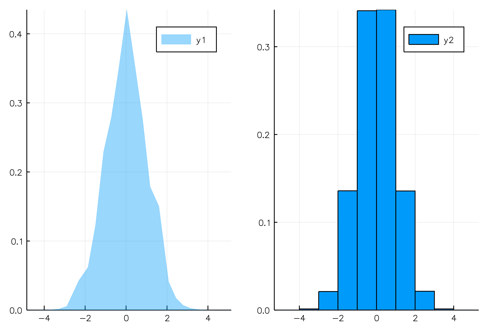
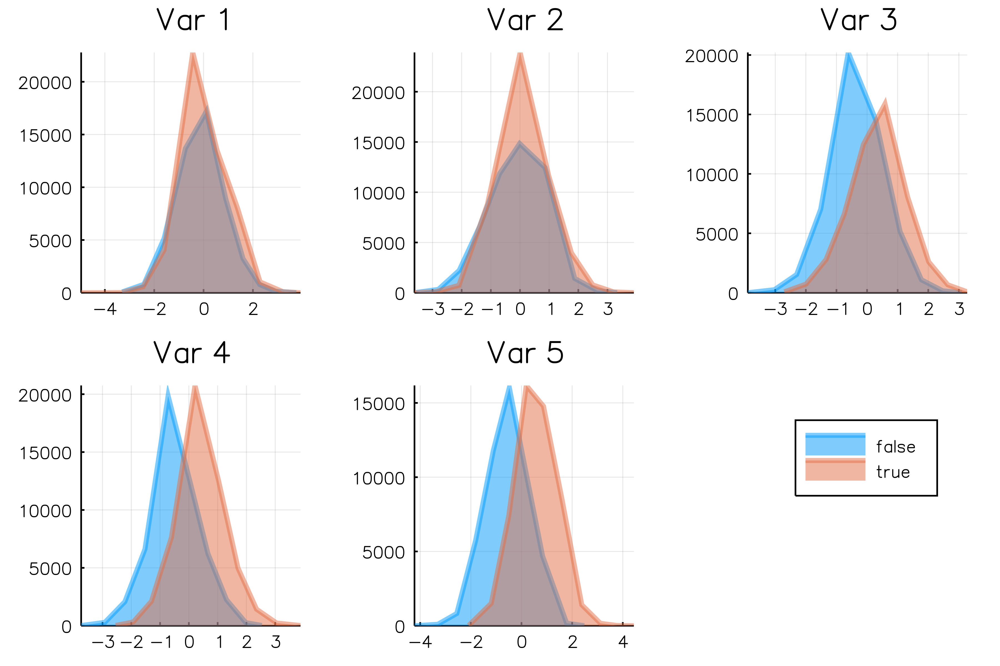
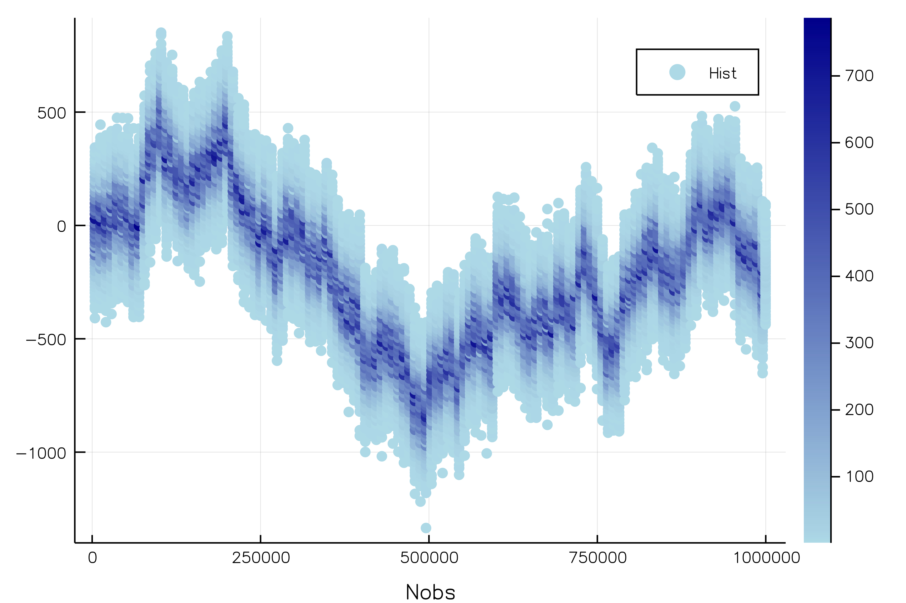
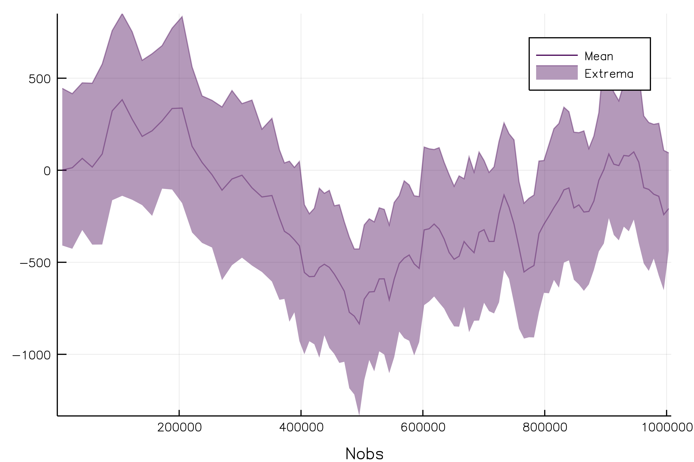
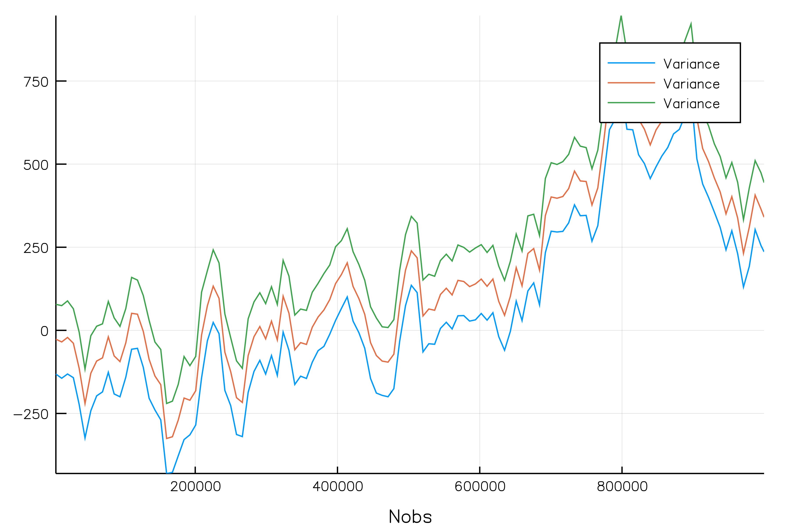
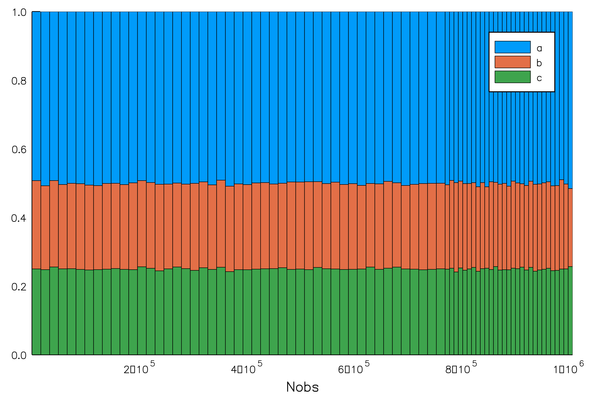
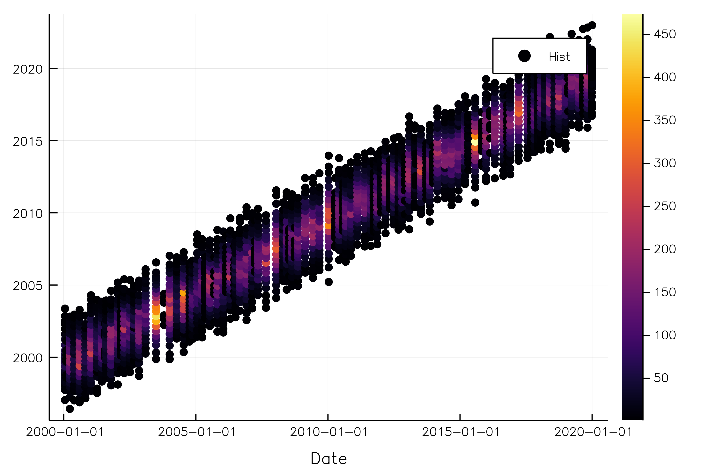
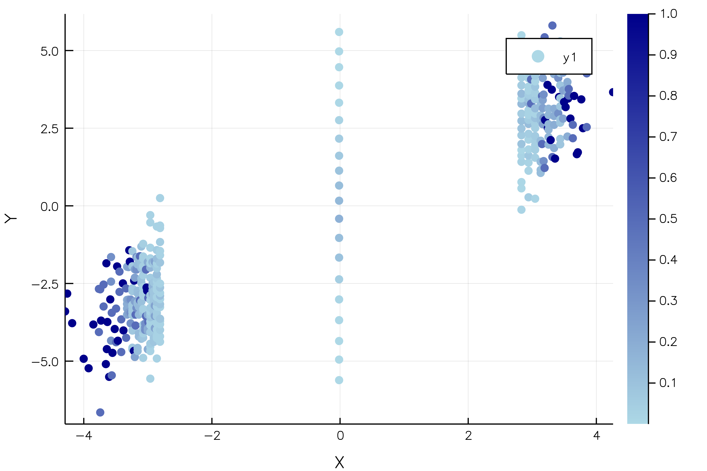
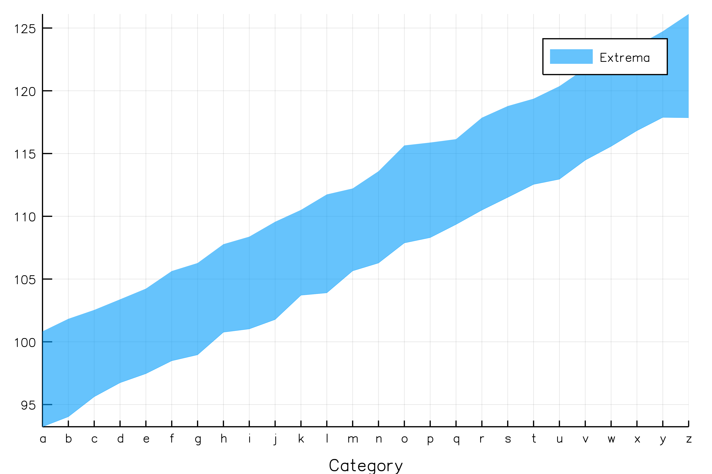
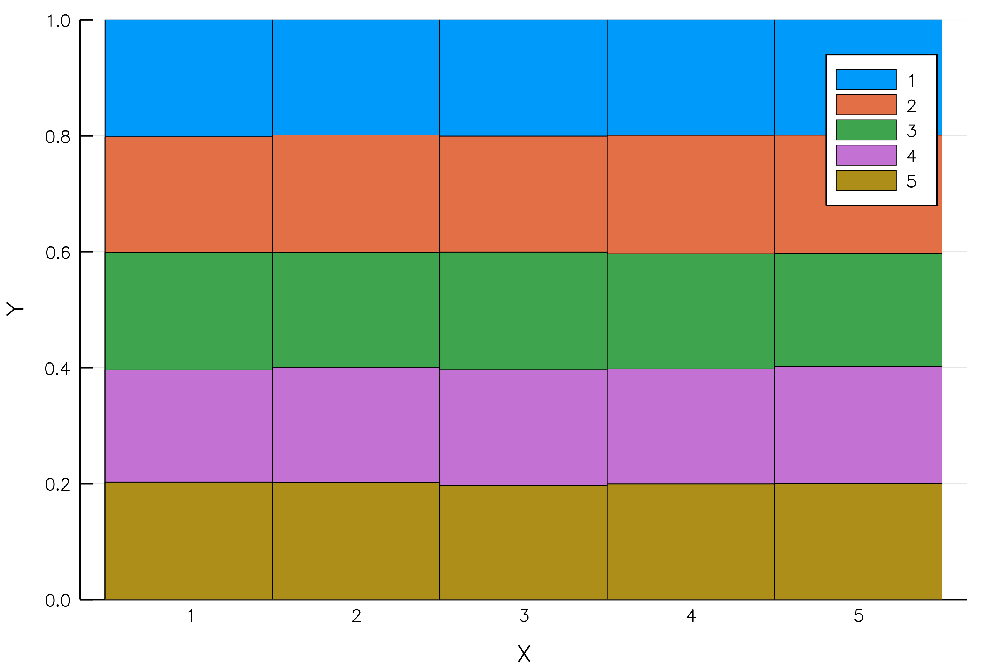

Visualizations
Plotting a Series plots the contained OnlineStats
s = Series(randn(10^6), Hist(25), Hist(-5:5))
plot(s)
Naive Bayes Classifier
The NBClassifier type stores conditional histograms of the predictor variables, allowing you to plot approximate "group by" distributions:
# make data
x = randn(10^5, 5)
y = x * [1,3,5,7,9] .> 0
o = NBClassifier(5, Bool) # 5 predictors with Boolean categories
series((x,y), o)
plot(o)
savefig("nbclassifier.png"); nothing # hide
Partitions
The Partition type summarizes sections of a data stream using any OnlineStat, and is therefore extremely useful in visualizing huge datasets, as summaries are plotted rather than every single observation.
Continuous Data
y = cumsum(randn(10^6)) + 100randn(10^6)
o = Partition(Hist(50))
s = Series(y, o)
plot(s, xlab = "Nobs")
o = Partition(Mean())
o2 = Partition(Extrema())
s = Series(y, o, o2)
plot(s, layout = 1, xlab = "Nobs")
Plot a custom function of the OnlineStats (default is value)
Plot of mean +/- standard deviation:
o = Partition(Variance())
s = Series(y, o)
plot(o, x -> [mean(x) - std(x), mean(x), mean(x) + std(x)], xlab = "Nobs")
savefig("partition_ci.png"); nothing # hide
Categorical Data
y = rand(["a", "a", "b", "c"], 10^6)
o = Partition(CountMap(String), 75)
s = Series(y, o)
plot(o, xlab = "Nobs", bar_widths = nobs.(o.parts))
Indexed Partitions
The Partition type can only track the number of observations in the x-axis. If you wish to plot one variable against another, you can use an IndexedPartition.
x = rand(Date(2000):Date(2020), 10^5)
y = Dates.year.(x) + randn(10^5)
s = Series([x y], IndexedPartition(Date, Hist(20)))
plot(s, xlab = "Date")
x = randn(10^5)
y = x + randn(10^5)
s = Series([x y], IndexedPartition(Float64, Hist(20)))
plot(s, ylab = "Y", xlab = "X")
x = rand('a':'z', 10^5)
y = Float64.(x) + randn(10^5)
s = Series([x y], IndexedPartition(Char, Extrema()))
plot(s, xlab = "Category")
x = rand(1:5, 10^5)
y = rand(1:5, 10^5)
s = Series([x y], IndexedPartition(Int, CountMap(Int)))
plot(s, bar_width = 1, xlab = "X", ylab = "Y")